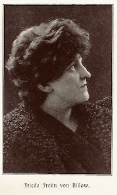
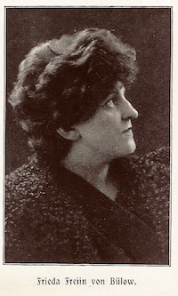

Frieda von Büllow
Frieda von Büllow


„Exkurs: Frieda von Bülow – Schriftstellerin und „Kolonialmissionarin“.
Diese Seite ist ein Angebot von Mission EineWelt
Mission EineWelt ist das Centrum für Partnerschaft, Entwicklung und Mission der Evangelisch-Lutherischen Kirche in Bayern. Das Centrum pflegt Beziehungen zu lutherischen Partnerkirchen in Afrika, Asien, Lateinamerika und dem Pazifik und nimmt einen entwicklungspolitischen Bildungsauftrag in Deutschland wahr. Im Rahmen von Kooperationen auf landeskirchlicher Ebene bestehen Verbindungen zu weiteren Kirchen in Nordamerika, Osteuropa und Skandinavien.